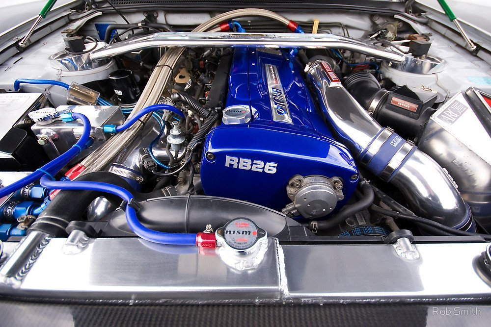

Para entender bien que es el JDM debemos trasladarnos tiempo atras mas especificamente a la decada de 1990 cuando ciertos medios de comunicacion se centraron en un creciente entusiasmo por los "Loa autos tuneados" japoneses y la cultura entusiasta que estaba formandose alrededor de ellos.
Eran los 90 y entre los jovenes japosese comenzaba a tomar fuerza una nueva moda o cultura que consistia en el tuning de los autos del mismo pais. -Estas modificaciones ivan desde el rendimiento del motor, pudiendo estos mismos llegar a limites que eran impresionantes en su epoca.  -Pero tambien ivan a la performance, modificando la aerodinamica del auto para lograr que este tubiese mejor renidmiento no solo en su motor sino en el tema de la velocidad en pista. -Y lo ultimo pero no menos importante tenemos las modoficaciones esteticas extrabagantes, que ivan desde luces de neon bajo el auto, faldones muy gruesos ,alerones enormes,guardafangos salidos, pintura de colores llamativos que no contribuian en el renidmiento del auto ni mucho menos en su aerodinamica pero que a estos entusiastas les gustaba; claro existen otras modificaciones menos locas esteticamente (en mi opinion personal esta ultima es la que mas me a gustado y a llamado la atencion).